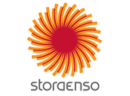
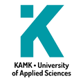

Improving Water Quality.
SansOx provides solutions for improving the water quality at all stages of natural water circulation. We are dedicated to water treatment that does more than purify and aerate — we focus on revitalizing and enriching natural water ecosystems, fostering the natural equilibrium and vigor of aquatic environments.
Sources: Pylkkänen, IWA Milan 2021 · sansox.fi project pages · Finnish Trade Register.
In the core of our solutions — OxTube
SansOx OxTube is a modular solution that can be retrofitted, easily removed, cleaned and installed in many stages of the water treatment process. OxTube can be integrated into any water flow system of fresh water processing and waste water treatment, providing comprehensive oxygenation and aeration. It can be applied with various treatment plants and natural water flows — and investment costs are relatively low.

OxTube in service at a Finnish plant. Studies and pilot cases have shown that OxTube oxygenates water more rapidly and energy-efficiently than existing systems. Read the published article — 90 % pharmaceutical removal in 0.7 s
Natural Water
Lakes, ponds, rivers, fish farming, irrigation — restoring dissolved oxygen where nature needs it.
ExplorePotable Water
Radon, iron, manganese, pH and unwanted gases — removed in the pressurised pipeline.
ExploreWaste Water
Aeration, COD/BOD, H₂S, pharmaceutical residues — treatment inside the pipe you already have.
FollowNews
Dispatches from the field: ponds saved, textile water in Asia, the Baltic Sea Project win.
Partners & customers


The article behind the numbers
OxTube Integrated Water Clarification for Removal of Pharmaceutical Residues and Disinfection — presented at IWA Ecotechnologies for Wastewater Treatment, Milan 2021. Cetirizine 99.9 %, Diclofenac 99.7 %, Losartan 99.6 %.
Talk to an engineer
Mikael, Jukka and Juhani answer their own phones. Tell us your flow and your water — you will get an honest answer.